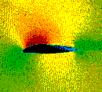

Research and Development in Wind Energy

For wind turbine manufacturers, the basic aim of research and
development of wind turbines is to be able to manufacture ever
more cost effective machines.
 Photograph
Photograph
of computer simulation of airflows around a rotor blade ©
Risoe National Laboratory, Denmark

Basic
Aerodynamics Research
 Wind
turbines engineers use techniques such as stall,
which aircraft designers try to avoid at all costs. Stall is
a very complex phenomenon, because it involves airflows in three
dimensions on wind turbine rotor blades. (e.g. the centrifugal
force will induce an airflow which makes the air molecules move
radially along the rotor blade from its root towards the tip
of the blade).
Wind
turbines engineers use techniques such as stall,
which aircraft designers try to avoid at all costs. Stall is
a very complex phenomenon, because it involves airflows in three
dimensions on wind turbine rotor blades. (e.g. the centrifugal
force will induce an airflow which makes the air molecules move
radially along the rotor blade from its root towards the tip
of the blade).
3D computer simulations of airflows are rarely used in the aircraft industry, so wind turbine researchers have to develop new methods and computer simulation models to deal with these issues.
Computational Fluid Dynamics, or CFD, is a group of
methods that deal with simulating airflows around e.g. rotor
blades for wind turbines.
 The picture shows a computer simulation of
the airflows and pressure distributions around a wind turbine
rotor blade moving towards the left.
The picture shows a computer simulation of
the airflows and pressure distributions around a wind turbine
rotor blade moving towards the left.
Aerodynamic
Improvement Devices
A number of technologies known from the aircraft industry
are increasingly being applied to improve the performance of
wind turbine rotors.
 One example is vortex generators,
which are small fins, often only about 0.01 metre (0.4 inch)
tall, which are fitted to the surface of aircraft wings. The
fins are alternately slightly skewed a few degrees to the right
and the left. The fins create a thin current of turbulent air
on the surface of the wings. The spacing of the fins is very
accurate to ensure that the turbulent layer automatically dissolves
at the back edge of the wing.
One example is vortex generators,
which are small fins, often only about 0.01 metre (0.4 inch)
tall, which are fitted to the surface of aircraft wings. The
fins are alternately slightly skewed a few degrees to the right
and the left. The fins create a thin current of turbulent air
on the surface of the wings. The spacing of the fins is very
accurate to ensure that the turbulent layer automatically dissolves
at the back edge of the wing.


 Curiously,
this creation of minute turbulence prevents the aircraft wing
from stalling at low wind speeds.
Curiously,
this creation of minute turbulence prevents the aircraft wing
from stalling at low wind speeds.
 Wind turbine blades are prone to stalling
even at low wind speeds close to the root of the blade where
the profiles are thick.
Wind turbine blades are prone to stalling
even at low wind speeds close to the root of the blade where
the profiles are thick.
 Consequently, on some of the newest rotor
blades you may find a stretch of one metre or so along the back
side of the blade (near the root) equipped with a number of vortex
generators.
Consequently, on some of the newest rotor
blades you may find a stretch of one metre or so along the back
side of the blade (near the root) equipped with a number of vortex
generators.
(Picture © LM Glasfiber A/S).
© Copyright 1998 Soren Krohn. All rights reserved.
Updated 19 January 2001
http://www.windpower.org/tour/rd/index.htm